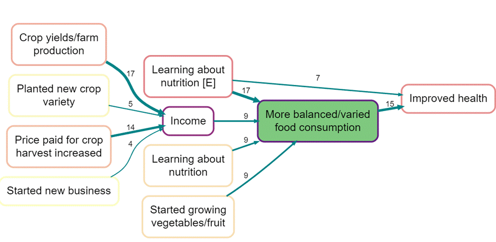

Qualitative causal mapping in evaluations
Fiona Remnant, James Copestake, Steve Powell, Melanie Channon
Abstract:
Understanding why and how people access and deliver health services and what they perceive to be barriers or drivers to improved health behavior and outcomes are crucial parts of any heath services evaluation, but doing so in a credible and cost-effective way is challenging. This chapter presents the Qualitative Impact Protocol or QuIP (Copestake et al., 2019), a qualitative approach to data collection and analysis of complex interventions pioneered in the field of international development and since used in a variety of settings, including in the health sector. Previous applications include evaluating the impact of sexual and reproductive health services, of international volunteer inputs into medical training, graduate training of midwives, vaccination programs, and multifaceted interventions aiming to improve early childhood care and nutrition.
This approach uses collects narrative accounts from a combination of focus groups and in-depth interviews with intended service users and other stakeholders about changes they regard as important in pre-defined ‘outcome’ domains relevant to an intervention’s goals. Identified outcomes provide the starting point for discussion of how and why these changes have taken place. The narrative data is then coded and synthesized using causal mapping (Powell et al., 2023). (#_msocom_1)
Findings can be used both to (dis)confirm previously formulated ‘theories of change’ about how a particular intervention is expected to work, and in a more exploratory manner to understand the causal processes at play. It is particularly useful for surfacing new, emerging, and unexpected causal factors and possible links between them.
The chapter demonstrates how rich narrative data from carefully selected sources can then be coded, aggregated, reviewed at different levels of detail, and visualized using causal qualitative data analysis and causal mapping. This approach to analysis, combined with innovative developments in data collection methods, helps to make rich narrative data more transparent and accessible. The aim is to provide an independent ‘reality check’ that can complement other forms of evaluative practice, including process tracing, contribution analysis, realist enquiry, statistical inference based on quantitative data, and process evaluation. (#_msocom_2)
1. Overview and context#
The Qualitative Impact Protocol (#msocom_3) was originally developed as a credible and affordable alternative to large-scale experimental evaluations, specifically for development organizations working in diverse, complex, and rapidly changing contexts (Copestake _et al., 2019). In the decade since its original development, it has been applied to evaluations in a wide range of contexts, and there is scope to extend the approach further in healthcare service evaluations. The person-centered approach to the data collected, with a focus on learning from personal experiences, lends itself well to a better understanding of variation in what helps and hinders access to and use of health services by different people, as well as how, and why. It can help unpick the full continuum of access to healthcare from perception of need, through seeking healthcare, reaching, obtaining and fully realizing the benefits from both the population and provider perspectives (Levesque et al,. 2013(#_msocom_4) ).
QuIP focuses on what people report as changes (and causes of changes) which are most important to them – providing a ‘reality check’ on expected benefits. It is good for understanding impact in complex and fast changing situations, including unanticipated causes and unintended effects. In contrast, it is not designed to elicit information about the magnitude of changes, nor to generate precise estimates of average ‘treatment’ effects; although it can usefully complement more quantitative approaches and can inform quantitative modeling and simulation.
In contrast to purely quantitative methods, the QuIP sets out to generate case-by-case evidence of impact based on narrative statements collected directly from stakeholders, without the need to interview a control group. Evidence of causal contributors to outcomes is elicited from respondents by using an interview style which prompts them to share their experiences and perceptions of the causal processes underpinning reported changes - ‘what do you think has changed in this area of your life, and why do you think that change has happened?’ This overtly causal approach to data collection and analysis relies on language-based direct perception of causation, and so contrasts with methods that rely on statistical inference based on variable exposure to an intervention to estimate causal effects.
QuIP usually collects evidence of people’s perceptions of what has changed compared to a specified time(#_msocom_5) period before an intervention. For example, the two following sentences are rich in information about drivers of change (and no change), using a ‘previous time’ anchor of one year ago:
“I have been happier and more confident since I joined a local community gardening group. Sometimes I didn’t see people for weeks at a time but now I talk to people at least once a week.”
“I don’t think that my fitness has changed much in the last year, I tried doing an outdoor fitness group, but I didn’t like it when it was wet, and I haven’t found anything else that I can afford to do.” (#_msocom_6)
In other instances, respondents may implicitly compare an outcome - such as prolonging breastfeeding - with what they would otherwise have done - e.g. if they had not been encouraged to do so by a health worker.
Asking people directly about change requires thinking carefully about credible ways to address potential response biases, particularly confirmation bias. Concern that people will tell you what they ‘think you want to hear’ is a common criticism of relying on self-reported narrative data in evaluation, so tackling this head on in the design is important to the credibility of this approach. As a result, QuIP interviews rely mainly on open-ended questions which are as far as possible posed in a ‘goal-free’ manner, with no reference to the intervention at any point in the interview; indeed, in many contexts it is possible for researchers to conduct the interviews without themselves knowing any or many details of the program being evaluated. This both reduces the possibility of pro-intervention or confirmation bias and helps to collect a broader range of information about activities and drivers of change, since respondents’ comments are not framed or limited to a specified intervention.
Unprompted reference to cause and effect is particularly important when relying on the ‘latent counterfactuals’ embedded in everyday speech to identify what causes change (or not). So, the example responses above are not elicited by asking about how useful the community gardening group has been as a mental health initiative, or the subsidized outdoor exercise classes as an obesity reduction initiative. Rather they are elicited by asking ‘How has your sense of wellbeing and happiness changed over the past year?’ and ‘How has your fitness changed compared to this time a year ago?’ Whether the initiatives are mentioned, and in relation to which outcomes cannot be planned or guaranteed – the stories of change will depend on what is significant in the minds of the selected respondents in the context of the question asked.
Stories of change collected in this way are analyzed using causal qualitative data analysis (Powell et al. 2023b); identifying and connecting reported cause and effect factors in the narrative statements. The analytical challenge is to be able to summarize and present key findings from relatively large sets of qualitative data - usually focused on whether the evidence explicitly or implicitly confirms or undermines the causal theory underpinning the intervention. The creation of empirical causal maps can be compared with the theories of change that informed the intervention, as well as to compare the experiences and perceptions of different stakeholder groups - e.g., men and women, or junior and senior healthcare staff.
QuIP is the product of a pragmatic and eclectic approach to methodological development that borrows from several other theory-based approaches, notably Realist Evaluation, Contribution Analysis, Most Significant Change, Outcome Harvesting and Process Tracing(#_ftn1). It is particularly useful to highlight its affinity with Realist Evaluation (RE), with its emphasis on how causal processes are shaped by the way people think and feel, and on understanding “what works, for whom, in what respects, to what extent, in what contexts, and how?” (Pawson and Tilley, 1997). Answering these questions depends firstly on acknowledging and understanding the complexity of the real world; the context which surrounds and drives our thoughts and actions, including the complexity of program interventions. Often messy context influences the causal mechanisms through which decisions are made and change does or doesn’t happen for different people in the form of outcomes. The QuIP’s approach to identifying multiple and distinct pathways linking cause and effect bears much similarity to RE’s approach to identifying multiple and distinct context-mechanism- outcome (CMO) configurations.
QuIP collects people’s perceptions of causal pathways in an explicit attempt to unpack how resilient structural and cultural features of society affect the cognitive, internal ‘mechanisms’ by which we engage with the world and a particular program or intervention. It does not seek universal laws in respondents’ responses but does assume that our experiences and opinions are likely to be important. QuIP is therefore ideally placed to provide detailed information on mechanisms in mixed methods evaluations, whether concurrent, sequential or more complex (Copestake, 2023). Pawson (2013:19) suggests that “as a first approximation… mining mechanisms requires qualitative evidence, observing outcomes requires quantitative [data] and canvassing contexts requires comparative and sometimes historical data.”
Where QuIP differs from other approaches to RE is in its indirect approach to interviews and focus group discussions, by structuring these around broad ‘outcome domains’ and letting respondents elaborate unprompted on the causes of identified changes. Realist interviewing and focus group discussions tend instead to be more open and explicit in reciprocal exchange of causal theories of researchers and respondents (Manzano, 2016; 2023). Another key difference is that QuIP, like other approaches that use causal mapping, is designed to capture information about a wide variety of causal links in an open-ended way rather than focusing on a small number of high-stakes causal ‘hotspots’, as is the case with RE and process tracing. This broader approach is relevant to the most recent Medical Research Council guidance on evaluating complex interventions, which highlights the importance of theorizing impact mechanisms, understanding interactions with changing contexts, and identifying all the impacts of an intervention (Skivington et al., 2021).
One potential limitation of reliance on self-reported evidence of impact is that it is limited by what respondents know and what they regard as most important. Purposive sampling is important to QuIP to increase the likelihood that respondents have relevant experience to share, and to maximize the prospects for revealing differences in understanding of causal processes among users and between users and staff. For this reason QuIP studies are better understood as a form of case study research (Copestake, 2021b). Woolcock summarizes how case-based approaches can help an evaluation, “(i) identify causal mechanisms to open the black box processes connecting causes and outcomes; (ii) elicit how processes of change unfold; (iii) explain the circumstances under which causal mechanisms are or not triggered; and (iv) helping to determine whether a particular intervention could work in other contexts” (Woolcock, 2022: 30).
2. Planning and designing a QuIP study#
This section presents practical advice on planning and carrying out a QuIP evaluation, and what different elements of the methodology can be adapted to meet the requirements of a specific evaluation. It covers the timing and staging of a QuIP study, sample selection, interview design and logistics, and analysis and use of the data.
2.1 Timing and sequencing with other studies#
Deciding when to schedule a QuIP depends on the purpose of the evaluation and the role of the QuIP in relation to other data being collected for the evaluation. This corresponds to the emphasis on timing, weight and purpose in Guest & Fleming’s review of mixed methods research (2015: 8).
● Early in the design phase, QuIP can be used as a diagnostic tool for identifying existing drivers of change in a context without a specific intervention. However, the approach to collecting stories of ‘change’ may need to be adapted to ensure that the data collected contains sufficient causal connections. Rather than relying only on people’s lived experiences of change it is possible also to ask hypothetical perceptions, such as ‘what do you think would cause change in this context?’
● Early or mid-way through a project, QuIP can be used as a ‘deep dive’ or ‘reality check’ to find out what stakeholders perceive to have changed, or not, with time for course correction. This can be particularly useful if you have real time monitoring data which raises questions, for example if certain groups/ interventions/ areas are positive or negative deviants. These groups can be purposively sampled to help understand what is different about their experiences, what are the enabling factors or barriers to success which could help with any program adaptation.
● In an ex-post evaluation QuIP can inform reflection on what worked and why (including the relevance, sufficiency and reliability of assumptions and theory underpinning the project). It is particularly useful when there isn’t a baseline or control group to aid impact evaluation through statistical comparisons.
Timing may also depend on its conjunction and weighting with other data. QuIP studies can be carried out concurrently with quantitative studies as part of “quant-led” mixed method impact evaluation (Copestake, 2023). More often it falls into or combines the two sequential approaches included in Creswell and Plano Clark’s (#_msocom_7) classification of six major design types:
Explanatory Sequential research starts with a quantitative survey, which in many cases can be used to help identify a smaller sub-sample for the ‘deep dive’ qualitative work. The QuIP data analysis can then be used to help explain the initial and any subsequent quantitative results, particularly in relation to certain groups where there were questions (e.g., positive or negative deviants).
Exploratory Sequential research starts with qualitative data collection and can then be used to help design and/or refine a quantitative survey. The results of the quantitative data collection can then be used to test or generalize initial findings from the QuIP study.
2.2 Sample selection#
Qualitative samples are not designed to be statistically representative of a wider population, but to reveal as much as possible (within constraints of time and money) about the range of causal processes experienced within it. This entails carefully justified purposive selection of cases for interview, taking advantage of what is already known about variation in the characteristics of respondents, context (including exposure to the specified intervention) and (ideally) outcomes (Copestake, 2021b). Sampling starts with identifying ‘clusters’ of respondents who are likely to have experienced broadly similar outcomes (e.g., based on their socio-economic characteristics and where they live). This provides a good starting point for identifying different groups, some of which can be further subdivided (e.g., between age groups, by sex or across different treatments). For each clearly defined cluster, QuIP studies aim to interview 24 (#_msocom_8) discrete respondents as independent sources to talk (mainly) about their own personal experience (hence 24 discrete cases). This is often complemented with sex and age specific focus groups through which participants can discuss experiences of change by ‘people like them’. A cluster of 24(#_msocom_9) interviews plus four focus groups has proven to be a useful (if somewhat arbitrary) benchmark for a cost-effective and timely evaluation, corresponding to a level of data collection that is usually achievable within a week by a team of two researchers, and allows for data collection in at least two contrasting clusters. Larger studies can be designed on the basis of multiples of this benchmark, e.g., 48 interviews + 8 FGDs. The decision to scale up in this way depends on the scope of the study, expected heterogeneity of users’ experiences, and budget/timing constraints.
Deciding on overall sample and subsample sizes is a matter of judgment which depends partly on whether the study is primarily exploratory or confirmatory as explained below.
“[QuIP] Sample selection is based on two overlapping criteria, one more exploratory and the other more confirmatory. Thematic saturation is concerned with ensuring that enough data is collected to identify the most important causal processes arising from the project, expected or otherwise. Bayesian updating, in contrast, seeks evidence to reinforce or undermine prior theory about the causal processes triggered by the project. Both criteria favor samples that capture as much heterogeneity as possible in relation to characteristics of respondents likely to affect impact. Consequently, case selection can benefit from being informed by close knowledge of context, project implementation and characteristics of the intended beneficiaries. But there is also a need for transparency about how the selection is made in order to guard against the risk of ‘cherry picking’ or other forms of bias” (Copestake, 2021b:6).
When considering healthcare evaluations, in addition to the recipients of an intervention, it may also be useful to sample a more diverse set of stakeholders, especially those involved in delivery and development as they may provide perspectives related to health systems, institutions, and providers that intervention recipients are not aware of. This could be done by including clusters of different stakeholder groups within the sampling framework, using adapted questionnaires for each group(#_ftn2). Other possibilities(#_msocom_10) include adding key informant interviews or focus groups with different stakeholders.
Box 1 introduces an example case study which will be used throughout this chapter; various projects delivered by Save the Children to improve health outcomes for pregnant mothers and infants. Box 1 focuses sampling, more aspects of the evaluation design will follow.
| Box 1:(#_msocom_11) Case study example - Sampling Context: Save the Children has used the QuIP approach on a number of projects designed to promote improved health and nutrition amongst pregnant and lactating women, and better feeding practices for babies and young children in rural, agricultural communities in Africa. This sampling example uses the Linking Agriculture & Nutritional Outcomes project (LAN) in Mozambique. Sample design: Four communities were selected in total from four districts where the intervention was active in Mozambique. The communities were purposively selected based on having had a similar length of project implementation, similar (high) number of project components started, and to provide a diversity of geographic contexts. In each community 12 individual households were interviewed, 48 in total. As women and mothers are the key LAN target group, more women were interviewed than men (7:5 in each community), but both were sampled since the theory of change assumes more participation from men in the households. Changes in breastfeeding practices and child nutrition were central to the research questions, so researchers only interviewed households with children under 5. Beneficiary lists were drawn up to meet these criteria, with those who were part of more than one intervention (out of four possible groups they could have been part of), and a range of types of groups prioritized at the top of lists given to researchers to help collect a wider range of experiences relevant to the interventions. (Researchers did not know why respondents were in the order they were in). Of the respondents who participated, 26 were part of more than one intervention group and 12 were part of three groups. 19 respondents were logged as having participated in the model mothers’ groups; 23 respondents as members of the farming groups; 25 as part of the savings groups; and 19 as gender dialogue participants. Individual interview sampling breakdown | | | | | | |—-|—-|—-|—-|—-| |Households with children under 5 years old and part of at least one intervention group| | | | | |Province|District|Community|Gender|Total| |A|1|Nhg|7 women + 5 men|12| |2|Nhs|7 women + 5 men|12| |B|3|Bra|7 women + 5 men|12| |4|Mgw|7 women + 5 men|12| |Overall: 48| In addition to the individual interviews, eight focus group discussions (FGDs) were conducted, typically with around 8 participants each. The FGDs were divided by intervention type in order to facilitate deeper discussion about the different activities, with participants known to have participation in that group; farmer groups, model mother groups (based on nutrition), savings and loans groups, and gender transformation groups. For Group D – Gender, FGDs were only conducted within single-sex groups, due to the gender-sensitive nature of the discussion. Focus Group Discussion sampling breakdown | | | | | | |—-|—-|—-|—-|—-| |Group type| |Province A|Province B|Total| |A - Agriculture| |1|1|2| |B - Nutrition| |1|1|2| |C - Savings| |1|1|2| |D - Gender| |1|1|2| |Overall: 8| | |
2.3 Data collection#
QuIP interviews can be conducted with individuals and/or focus groups. The aim of these interviews is to collect stories of change which focus on intended outcomes from a project-specific theory of change. Collecting and documenting data of this sort requires skilled interviewers who can put a respondent at ease and who have the patience to pursue a conversation of around an hour, teasing out details of cause and effect, without leading the respondent in a particular way(#msocom_12) (#_msocom_13) (#_msocom_14) . Researchers need to be very aware of their own biases which they bring to interviews and trained how to mitigate and control for these where possible. The less they know about the intervention being evaluated, the easier it is for them to probe for details of causal connections without (even unconsciously) driving responses in a particular direction (see more on ‘blindfolding’ later in this section). The ideal balance to be achieved is to allow respondents to select what _they think is important to share as stories of change, but for the interviewer to ensure that sufficient detail is captured about exactly how that change happened – including why behaviors changed and what or who influenced that. This requires lots of practice and pilot interviews so that the flow of a questionnaire can be tested, and feedback on interview style can be provided to researchers.
Interviews are structured around domainss which are pre-selected, based on the expected outcomes of an intervention (#_msocom_15) – not the inputs or outputs. See boxes 2 and 3 for an example of how such ‘domains’ are developed. Questions are designed to stimulate discussion; researchers are trained to let the respondent lead with what they consider to be the important stories relating to that domain, using supplementary question prompts to sustain and deepen conversations about changes observed by the respondent and the reasons behind them. These supplementary questions enable the use of more targeted questions should these not be volunteered after the initial question. The example of question C given in Box 2 relating to the food consumed by women and children is an illustration of how some questions can be made more specific if more details are required, but most questions would remain shorter and less specific.
In QuIP, open-ended discussion of a domain is usually followed by a closed question asking about how positive the described changes were for the respondent, overall. These kinds of closed questions are a useful way of drawing discussion to an end before moving onto the next domain. Using closed questions is important to offer the respondent the opportunity to summarize their sentiment about changes in a domain, rather than this be inferred and interpreted by an analyst later. Closed questions may also cover what the respondent considers to be the main overall reason for the changes. Stories of change can often be complex and include both positive and negative change; disentangling what that means for the respondent overall is a task which should not be attempted by anyone other than the respondent themselves.
| Box 2: Case study example - questionnaire development This section outlines the broad domains and some example questions used in various Save the Children projects. The domains take account of the different interventions which are part of a comprehensive approach to improving the nutritional status of women and children in communities considered to be poor in the local context. The interventions relate to improving access to clean water, better sanitation and hygiene practices, training on balanced nutrition – particularly for infants and young children, agricultural programs which aim to improve the range of foods grown in kitchen gardens as well as income from crop sales, support with savings groups, and gender awareness programs for all members of the community. The outcomes particularly focus on pregnant women, mothers, infants and young children but interventions take a holistic approach - working with the wider household and community on multiple related interventions which are mutually reinforcing in their outcomes. QuIP outcome domains: ● Health and hygiene ● Farming ● Income ● Food consumption (for all members of the household) ● Relationships within the household and in the community ● Overall wellbeing The interviews were designed to be broad and open-ended to allow the respondents to speak freely about what they believed to be significant changes in their lives. Researchers were trained to use the additional questions to probe further and establish what the perceived drivers of these changes were. Closed questions were also used at the end of each domain to capture overall perceptions of change in some specific areas. Example questions: Open question for Health: A. Please tell me how the health of your household has changed over the last year; do you feel that things are different compared to a year ago? • Do you and your family get sick more or less often than you used to? Why do you think this is? • Have you changed anything you are doing in your day-to-day life to stay healthy, and if so, what? • Has this been different for different members of the household (males/females; adults/children)? Why do you think this is?(#msocom_16) Closed question for Health: Overall, how has the health of your family changed over the past year? _Improved, Got worse, No change, Not sure What is the main reason for any change? Open questions for Food consumption: B. Please tell me about whether the food your household eats has changed over the last year. • Are you eating more or less of anything; if so, why? Are you eating anything new; if so, why? • Has food consumption during lean/hungry times of the year changed? How and why? • Have you changed how you process or store your food for the hungry period? If so, why? • Has the type or amount of food you purchase from markets changed? Why is this? • Has the type or amount of wild food you collect changed? C. Please tell me about how what the women and children in your household eat has changed over the last year. If you have been looking after a young baby (<6 months) during the last year: • Do/did they eat anything except for breast milk for the first 6 months and if so, what? • Has this changed from either a previous baby or the way babies were fed before last year and if so, why? • What are the number of meals and types of food eaten by pregnant or breastfeeding mothers in your household? Has this changed and if so, why? • Are these changes good or bad in your opinion? If you have been looking after an older baby (6 months-2 years) during the past year: • Do/did they eat anything except for breastmilk and if so, what? • How many meals and snacks do they eat per day? • Has this changed from previous babies and if so, why? If you have been looking after an older child (over 2 years) during the past year: • What different types and combinations of food are children over two years old eating? Is this different for boy or girl children in your household? Has this changed and if so, why? At the end of the interview respondents were asked to list the most important organisations or institutions they had interacted with who had positively impacted their family. This provided further information about which organizations and individuals are at work in the community and their relative importance to respondents. |
An evaluation commissioner will need to consider the extent to which details of the program being evaluated are shared with the researchers who will undertake the interviews. This approach can be termed ‘blindfolding’ (or double blindfolding), indicating that some or all of the details are temporarily withheld from the interviewer, interviewee or both. Inclusion of opportunities for subsequent ‘unblindfolding’, participatory sensemaking and reflective debriefing with interviewers can yield further insights and are also ethically important(#_ftn3). This(#_msocom_17) (#_msocom_18) approach can help to reduce the risk of pro-project bias and hence enhance the credibility of findings, but the extent to which it is used will depend on the aims and the context of the study.
● Double blindfolding is only possible through involving a third party, in order that the interviewers can be recruited, trained and supported without knowing the identity of the organization implementing the project or commissioning the study.
● Partial blindfolding is most often used as it is easier to gain ethical clearance for a study and is usually sufficient to encourage unprompted responses. A trusted team of researchers might be recruited directly by a commissioner, or they may need to know the identity of the commissioner to gain approved access to the respondents, but they do not need to be given detailed information about the intervention being assessed.
● In some cases, it is impractical, unethical or dangerous to blindfold either interviewers or respondents. It is still possible to focus on designing an open-ended and exploratory questionnaire, positioning the study in a broader context, and encouraging respondents to refer to this broader context when thinking about drivers of change. A trusted team of researchers may be able to obtain more detailed and relevant information about an intervention without using blindfolding; their professional expertise and integrity may be more than sufficient to ensure they are impartial and do not prompt respondents to respond to questions in line with prior understanding and interests.
3. Analysis and use of QuIP data#
3.1 Coding and analysis of causal data#
A common issue with qualitative research and impact assessment is how to organize and make sense of large quantities of textual data, and to do so in a way that is transparent, so that generalizations drawn from it can be peer reviewed. The aim is to recommend a process of analysis which is rigorous, replicable, relatively parsimonious, (and therefore) fast, and which leads to the consolidation of complex data into digestible visual summaries of reported causal pathways to change, whilst not losing the rich detail which sits behind each link.
 QuIP coding is based on the concept of causal mapping (Ackermann & Eden, 2004; Axelrod, 1976; Eden et al., 1992; Hodgkinson & Clarkson, 2005.; Laukkanen & Wang, 2016; Powell et al., 2023), where a causal map is defined very broadly as a diagram in which nodes are joined by directed arrows (‘links’), so that a link from factor C and D to factor E means that C and D have both in some way causally influenced E, according to some source S(#_msocom_19) (#_msocom_20) (#_ftn4). The aim of coding and visualizing data this way is to make rich narrative data more accessible to readers, without making broad generalizations which it is difficult for a reader to substantiate(#_msocom_21) . The approach advocated here retains a connection between the visual summaries and the original coded text which enables easy verification of causal claims.
QuIP coding is based on the concept of causal mapping (Ackermann & Eden, 2004; Axelrod, 1976; Eden et al., 1992; Hodgkinson & Clarkson, 2005.; Laukkanen & Wang, 2016; Powell et al., 2023), where a causal map is defined very broadly as a diagram in which nodes are joined by directed arrows (‘links’), so that a link from factor C and D to factor E means that C and D have both in some way causally influenced E, according to some source S(#_msocom_19) (#_msocom_20) (#_ftn4). The aim of coding and visualizing data this way is to make rich narrative data more accessible to readers, without making broad generalizations which it is difficult for a reader to substantiate(#_msocom_21) . The approach advocated here retains a connection between the visual summaries and the original coded text which enables easy verification of causal claims.
Different forms of causal mapping have a long history in the social sciences; this approach is specifically useful when seeking to document perceptions of what has worked, for whom and why, as elaborated by Powell et al. (2023b)
“Causal mapping and most related approaches share the basic idea that causal knowledge – whether generalized or about a specific case or context – can be at least partially captured in small, relatively portable ‘nuggets’ of information (Powell, 2018: 52). These can be assembled into larger models of how things worked, or might work, in some cases” (Powell et al. 2023b:3)
The process of coding QuIP data needs to be ‘natively causal’ at the point of coding – not after the fact as would usually be the case with qualitative data analysis, such as thematic analysis where separate factors can be linked later. QuIP data coding always involves pairs, or longer chains, of factors – cause and effect, one factor leads to another (and perhaps another). The data must, therefore, contain causal claims, reinforcing the need to follow the guidelines laid out in the previous section when collecting data. Reports of change with no causal explanation will prove difficult to code.
The approach to coding data does not rely on very large datasets or very sophisticated ways of differentiating types of causal claims. The analyst is looking for phrases such as ‘X changed because I started/stopped doing Y’, ‘Since Y happened, we are seeing more/less of X’, ‘Our yields went down because of X, but Z helped them improve’ etc. These causal ‘nuggets’ enable the analyst to link X to Y (and Z) in some way, denoting a positive or a negative connection. These links are one piece of evidence that someone claims that in their experience X is causally linked to Y, and this claim may be repeated (and elaborated upon) many times across a dataset. The coding is parsimonious because only causal claims are coded. Any additional information which describes the status quo is not coded. This may be of interest in other types of qualitative data analysis which seek to document how people live, but QuIP is specifically interested in what has changed, and why. If there is no evidence of change, the lack of any such links in a map is an indication that the project’s own “theory of change” (Connell & Kubisch, 1988) is not working in practice.
QuIP text analysis is mainly ‘inductive’; codes and labels are created based on the data in front of the analyst rather than starting with a predetermined codebook. It’s important to note that the analyst is not blindfolded in any way and knows details of the theory of change and the interventions in order to be able to flag up any causal pathways attributable to the intervention. However, the analyst bears a responsibility to use this information only to guide the analysis in relation to research questions, and must think carefully about the risks of their own positionality in relation to coding the data – as with any qualitative data analysis (Copestake, Davies & Remnant, 2019).(#_ftn5) Simply using the narrative statements provided as they are, the analyst should be able to identify repetition and patterns in the dataset and gradually harmonize labels to consolidate similar causal claims across different interviews.
Links must contain two factor labels:
● Driver of change / influence
● Outcome / consequence(#_msocom_22) (#_msocom_23) (#_msocom_24)
Using the previous examples of single narrative statements in section 1, we can see how these translate into pairs of factors.
“I have been happier and more confident since I joined a local community gardening group. Sometimes I didn’t see people for weeks at a time but now I talk to people at least once a week.”
“I don’t think that my fitness has changed much in the last year, I tried doing an outdoor fitness group, but I didn’t like it when it was wet and I haven’t found anything else that I can afford to do.” (#_msocom_25)
This allows for limitless linked driver-to-outcome pairs to be classified; one driver leading to an outcome, which in turn drives another outcome, or one driver leading to multiple outcomes simultaneously.
Although coding is mainly an inductive process, analysis will often be more ‘deductive’ - comparing findings to an explicit project “theory of change” (Powell et al. 2023a), or establishing the specific impact of particular interventions. To this end, it can be helpful to add ‘attribution’ labels to factors which indicate, for example, that they explicitly refer to an intervention activity, or that they refer to a particular thematic area of interest. These can be helpful when it comes to filtering causal maps, e.g., searching for all outcomes downstream of drivers which are part of the program’s activities, or all activities which relate to ‘Health & Hygiene’.
It is important to remember that causal maps derived from QuIP data are not causal models in a formal sense, they are representations of perceptions or experiences of change collected from respondents, “their constituent parts are about beliefs or evidence, not facts” (Powell et al. 2023b: 6). QuIP interviews are deliberately designed to elicit stories of change which articulate the respondents’ ideas about causal relationships, which allows us to create "causal maps" from the narrative data. Researchers are specifically looking for respondents’ reasoning about what they experienced, what actually happened, not their ideas or theories of ‘what causes what’ in general; in this sense, the meaning of an arrow from C to E in a causal map means that "someone claims that C causally influences E". This is as opposed to other causal diagrams where C ➜ E may simply mean “C causally influences E” and this is assumed to be true. The approach to QuIP data collection is what sets this type of causal mapping apart, relying as it does so critically on respondents’ own experiences, and their retelling of those experiences.
This should not detract from their usefulness, indeed comparing this kind of epistemic map of change with a theory of change can often be the main aim in a QuIP study. Consider the map below, taken from a QuIP evaluation for Save the Children. As a reminder, this was a health and nutrition program with many interlinked interventions aiming to improve health outcomes for families. The following map is taken from a dataset of 24 interviews in one area and is filtered based on the question ‘what is linked to the outcome More balanced/varied food consumption’?’ The summary map shows us the range of what people in this area think have caused change in their diet, what they think the causes of those causes are, and, for 15 people, that eating a more varied diet has led to an improvement in their health. The numbers above the links tell us how many different sources (people) made that claim(#_msocom_26) (#_msocom_27) – unprompted. The factor border colors become darker depending on how many times the factor was cited. The searched-for factor is highlighted in green as an indication of the filter used.
The number of people making a claim does not in and of itself have any statistical meaning, since this is not a statistically representative sample. Furthermore, in qualitative studies every story is relevant and important in some way, so some ‘outlier’ individual stories may also be represented in maps as case studies of particular causal pathways. Higher numbers simply indicate that more people reported this connection in this context(#_ftn6). Rubrics to help define what level and quality of evidence is sufficient to establish the success or otherwise of an intervention should be agreed with the commissioner, and will be unique to the context of the intervention and evaluation.(#_ftn7)
Figure 1: Causal map showing drivers of more varied food consumption

Note that the [E] used in the factor label ‘Learning about nutrition’ denotes that these claims were explicitly linked to Save the Children’s intervention, differentiated from the other factor with the same label where statements did not specify that the learning was via the intervention activities. This is useful at the point of analysis if you need to establish the impact of an intervention relative to other drivers and mitigating factors. This is a very simplified map which does not show the drivers further upstream, e.g., reasons given for planting new crops and improved crop yields. Further investigation can help to understand which combination of links are made by the same people, and whether there are any patterns to those combinations based on what we know about them(#_msocom_28) .
Various qualitative analysis software packages can be used for this approach. Microsoft Excel is one simple way to connect factor labels to portions of text; data can then be exported into visualization software to create maps. Since there was no dedicated causal mapping software available which enabled both qualitative coding and visualization of causal data, the non-profit organization Bath Social & Development Research has invested in the creation of a web application for coding and analysis of causal pathways, www.causalmap.app. This software requires a subscription for data coding, but is free to use for visualization and analysis of data for those who wish to upload data already coded elsewhere, e.g. using Excel.
3.2 Using causal pathways to make evaluative judgements#
Filtering and analyzing maps from a fully coded dataset enables exploration of which factors are reported as contributing to the outcomes cited, the extent to which these are related to the intervention, and what other factors may be mitigating or aiding their success. This approach is particularly useful in contexts where a variety of factors that are hard to disentangle are known to be likely to influence the intended outcomes of an intervention. This can help to avoid a tendency to exaggerate the role that an intervention plays in a complex system – often providing a ’reality check’. Questions to ask at the point of analysis:
• Is there evidence that the program is having the expected effect on intended beneficiaries, if so via which causal pathways?
• Did other, non-program, factors affect expected outcomes?
• Were there reports that the program had any unanticipated effects, positive or negative?
• What patterns can be identified that could inform future program design?
• Are there significant differences between the maps as seen by different age groups, sex, location, wealth etc.?
The data analysis described above can be adapted and taken further in numerous ways. Summary tables and maps are typically incorporated into a written report that also pulls out quotes from the source data to illustrate and elaborate on key findings. However, use of findings does not have to rely on written outputs, indeed if used as jumping off point it can help to add more evidence to explain anomalies or unexpected causal pathways. Interactive maps can be used to structure feedback meetings with project staff, beneficiary communities and other stakeholders. QuIP analysis takes its cues about which outcomes are important from the respondents themselves, so it is logical to involve them in triangulation workshops, enabling those attending to challenge, corroborate and complement findings. This both serves a quality assurance function and deepens understanding of what changes took place for whom, how and why.
Key interpretive questions include:
● To what extent are findings consistent with both transmission mechanisms and intended outcomes set out in the theory of change?
● What evidence of processes and outcomes is generated that is not consistent with the original theory of change, and how can these be explained?
● What scope is there for generalizing reasonably from findings to the whole project, taking into account characteristics of the whole sample of intended beneficiaries and of the sample of those interviewed?
● What explains differences in intended and observed processes and outcomes of the project and what are the implications for future activities?
● Is the data consistent or at odds with quantitative monitoring data, as well as data collected from other sources (including meetings with project staff)? How can differences and similarities best be interpreted?
The question of whether this is the right approach for a particular evaluation will depend on the question of what evidence is needed, and what purpose the evaluation serves. Is it primarily to check and demonstrate which past actions worked, or to identify specific ways to improve ongoing activities? Is it more important to quantify the magnitude of impact, or to explain why this varied from person-to-person or from place-to-place? How credible does the evidence have to be for different audiences, and what level of expenditure can be justified? QuIP can be used as the qualitative component in a mixed methods design, or even offer a faster and much cheaper alternative to a quantitative impact assessment in some contexts where collecting quantitative data is difficult, unaffordable or unlikely to be very useful. Quantitative ways to assess impact can be rigorous and precise but they can also be expensive, slow, emphasize average effects and say relatively little about how change takes place.
Also(#_msocom_29) relevant to the decision to use QuIP or not is being clear about what QuIP studies cannot do:
● Provide results that are statistically representative of all intended beneficiaries. QuIP studies are designed to gain a deeper insight into changes occurring in purposively selected groups, and to permit cautious generalization across the wider population.
● Guarantee to answer very specific questions about the impact of certain project activities. If the activity is considered important by respondents in a wellbeing domain covered in the interview (and not simply taken for granted) then the QuIP should pick up unprompted references to these project-related drivers. However, if project activities are relatively marginal to respondents’ lives, then a more direct and targeted line of questioning is required.
● Measure the magnitude of impacts or provide detailed quantitative data. The QuIP focuses on the nature of impact rather than its magnitude. Some quantification of drivers of change and outcomes can be generated to summarize and visualize patterns and themes across the sample, but the data is not statistically representative. It may be useful to inform modeling that can simulate the magnitude of change, but other data will be needed with which to calibrate such models.
● Score or weight the overall success or failure of a project. Whilst the visualization of coded qualitative data can make the evidence easier to digest and highlight patterns and outliers, commissioners need to be prepared to engage with the data, and where possible triangulate with evidence from other sources to make an overall assessment of the project and draw out recommendations for future action.
In contexts where it is possible to compromise on any of the above, using a qualitative, causal approach to evaluation such as QuIP can offer a range of benefits, not least of which is a more in-depth understanding of (#msocom_30) (#_msocom_31) intended beneficiaries’ _perceptions of change and their understanding of why these changes have happened. We have outlined possible ways to reduce the risk of pro-project bias in the collection of such experiences, through careful design of exploratory interviews and incorporation of an appropriate level of blindfolding. Judicious, purposive sampling can help to reveal variation in causal pathways across different populations and different groups of stakeholders (e.g. health facility staff and government policymakers), and to understand the extent to which they overlap. Presenting the data in a digestible and visual format can enable and encourage program staff to use and engage with narrative, causal data which can assist in confirming or refuting the theory (of change) behind interventions.
References
Ackermann F and Eden C (2004) Using causal mapping: Individual and group; traditional and new. In: Pidd (ed.) Systems Modelling: Theory and Practice. Chichester: Wiley, pp. 127–45.
Axelrod R (1976) Structure of Decision: The Cognitive Maps of Political Elites. Princeton, NJ: Princeton University Press.
Connell, J. P., & Kubisch, A. C. (1998). Applying a theory of change approach to the evaluation of comprehensive community initiatives: Progress, prospects, and problems. New Approaches to Evaluating Community Initiatives, 2(15–44), 1–16.
Copestake, J, Davies, G, Remnant, F. (2019). Generating credible evidence of social impact using the Qualitative Impact Protocol (QuIP): The challenge of positionality in data coding and analysis In: Clift, B, Gore, J, Bekker, S, Costas Batlle, I, Chudzikowski, K & Hatchard, J (eds) 2019, Myths, Methods, and Messiness: Insights for Qualitative Research Analysis: Edited Proceedings of 5th Annual Qualitative Research Symposium. University of Bath.
Copestake, J, Morsink, M, Remnant, F. 2019. Attributing Development Impact: The Qualitative Impact Protocol Case Book. Practical Action Publishing.
Copestake, J. 2021a. Briefing note: case selection for QUIP studies. BathSDR working paper. https://bathsdr.org/wp-content/uploads/2021/10/Sample-selection-for-QUIP-studies-briefing-note.pdf
Copestake, J. 2021b. Case selection for robust generalisation: lessons from QuIP impact evaluation studies, Development in Practice, 31:2, 150-160, DOI: 10.1080/09614524.2020.1828829
Copestake, J. 2023. Mixed methods impact evaluation in international development: distinguishing between ‘quant-led’ and ‘qual-led’ approaches. BathSDR working paper. https://bathsdr.org/wp-content/uploads/2023/10/Copestake-2023-Mixed-methods-impact-evaluation-pre-publication-version.pdf
Creswell, J., & Plano Clark, V. 2011. Designing and conducting mixed methods research (2nd ed.). Thousand Oaks, CA: Sage.
Eden C, Ackermann F and Cropper S (1992) The analysis of cause maps. Journal of Management Studies 29(3): 309–24.
Guest, G., & Fleming, P. 2015. Mixed methods research. SAGE Publications, Inc., https://doi.org/10.4135/9781483398839
Hodgkinson, G. P., & Clarkson, G. P. (2005). What have we learned from almost 30 years of research on causal mapping? Methodological lessons and choices for the information systems and information technology communities. Causal Mapping for Research in Information Technology, 46–80.
Laukkanen M and Wang M (2016) Comparative Causal Mapping: The CMAP3 Method. London: Routledge.
Levesque J-F, Harris MF, Russell G. (2013). Patient-centred access to health care: conceptualising access at the interface of health systems and populations. International journal for equity in health 12(18): 1-9.
Manzano, A. 2016. The craft of interviewing in realist evaluation. Evaluation, 22(3):342-360.
Manzano, A. 2022. Conducting focus groups in realist evaluation. Evaluation, 28(4):406-425.
Pawson, R. 2013. The science of evaluation: a realist manifesto. London: Sage.
Powell S (2018) The book of why the new science of cause and effect. Pearl, Judea, and Dana Mackenzie. 2018. Hachette UK. Journal of Multidisciplinary Evaluation 13: 47–54.
Powell S, Larquemin A, Copestake J, et al. 2023a. Does our theory match your theory? Theories of change and causal maps in Ghana. In: Simeone L, Drabble D, Morelli N, et al. (eds) Strategic Thinking, Design and the Theory of Change. A Framework for Designing Impactful and Transformational Social Interventions. Cheltenham: Edward Elgar Publishing, pp. 232–50.
Powell, S., Copestake, J., & Remnant, F. 2023b. Causal mapping for evaluators. Evaluation, 0(0). https://doi.org/10.1177/13563890231196601
Skivington K, Matthews L, Simpson S A, Craig P, Baird J, Blazeby J M et al. (2021) A new framework for developing and evaluating complex interventions: update of Medical Research Council guidance. BMJ 374 doi:10.1136/bmj.n2061.
Woolcock, M. 2022. “Will It Work Here? Using Case Studies to Generate ‘Key Facts’ About Complex Development Programs.” In The Case for Case Studies: Methods and Applications in International Development, edited by Jennifer Widner, Michael Woolcock, and Daniel Ortega Nieto, 87–116. Cambridge, UK: Cambridge University Press.
View examples of how QuIP has been used at www.bathsdr.org/resources
Save the Children have made three of their reports available:
Tanzania QuIP report: https://resourcecentre.savethechildren.net/document/quip-report-on-save-the-childrens-harnessing-agriculture-for-nutrition-outcomes-hano-project-in-tanzania-june-2017/
Mozambique QuIP report: https://resourcecentre.savethechildren.net/document/mid-term-evaluation-of-the-linking-agribusiness-and-nutrition-lan-project-in-mozambique-a-qualitative-impact-protocol-quip-study-september-2019/
Zimbabwe QuIP report: https://resourcecentre.savethechildren.net/document/the-garden-trust-project-evaluation-in-zimbabwe-2021
(#_ftnref1) A detailed comparison of QuIP and other approaches to evaluation can be found in Chapter 2 of the QuIP Casebook (Copestake, Morsink & Remnant: 2019).
(#_ftnref2) This approach was recently used by MannionDaniels where QuIP formed part of an evaluation of the impact of UK government support of the Nepalese healthcare system. Different stakeholder groups interviewed included provincial and local government officers, health facility staff and NGO staff. Each group provided their perspective of a different part of the healthcare system. These perspectives can be combined to provide a bigger picture view.
(#_ftnref3) See this blog for more on efforts to incorporate more transparency into evaluations https://bathsdr.org/whose-voice-why-we-must-change-our-tcs/
(#ftnref4) Note in general, causal maps encode “a” causal _influence of C (and D) on E and only in special cases encode total or exclusive causation such that C (and D) entirely determines E or is “the” cause of E.
(#_ftnref5) See Chapter 2 of the edited volume for more on ‘The challenge of positionality in data coding and analysis’
(#_ftnref6) For more on the tension between text and numbers see the Bath SDR guidance paper ‘From narrative text to causal maps’ available at: https://bathsdr.org/wp-content/uploads/2021/10/From-narrative-text-to-causal-maps-QuIP-analysis-and-visualisation.pdf
(#_ftnref7) See Aston & Apgar 2023 for more on Quality-of-Evidence rubrics: https://www.evaluation.org.uk/app/uploads/2023/12/Quality-of-Evidence-Rubrics-2.0-Final.pdf
(#_msoanchor_1)I found this hard to read so switched it arouond
(#_msoanchor_2)Suggest breaking up this sentence for readability
(#_msoanchor_3)Spell out in full as first mention in main body
(#_msoanchor_4)Levesque J-F, Harris MF, Russell G. Patient-centred access to health care: conceptualising access at the interface of health systems and populations. International journal for equity in health [Internet]. 2013 16 August 2020; 12(1):[18 p.]. Available from: https://equityhealthj.biomedcentral.com/articles/10.1186/1475-9276-12-18. pmid:23496984
(#_msoanchor_5)specified time? To indicate that this is prompted by the approach?
(#_msoanchor_6)Don’t think I really agree with this argument, that people perceive causal effects only via a kind of internal comparison with a counterfactual. I weakened this part without rewriting. Feel free to change back, I am not going to die on that hill
(#_msoanchor_7)Needs a reference
(#_msoanchor_8)The explanation below re. this sample size target may be better integrated here. The specification of the number 24 without context is a little out of place with no prior knowledge of the approach
(#_msoanchor_9)This may be better positioned earlier - see comment above
(#_msoanchor_10)Footnote below carries over to next page
(#_msoanchor_11)Cross-reference in-text
(#_msoanchor_12)Is there room to flesh this out a little more for someone who is intending to conduct such interviews for the first time - there's two distinct components to the data collection: i) from the perspective of the evaluator, i.e. preparing the list of domains/interview guide and ii) the conduct of the interview itself which is not described in detail
(#_msoanchor_13)Consider additional sources of bias and issues that can arise in the interview process itself, e.g., interviewer-interviewee dynamic, modality of interview, location of interview, etc.
(#_msoanchor_14)This is such a big topic area I’m not sure we can add much more within the chapter. I have tweaked the para and example a little, but to cover this in any depth would require a lot more words which would make the chapter too long.
(#_msoanchor_15)Is that true? Aren’t domains broad thematic areas such that changes within these areas are of interest to the commissioner ? Otherwise it sounds like we do anticipate particularoutcomes
(#_msoanchor_16)I don’t really understand this part. Are each of these specific questions actually open questions which can lead into causal backchaining? Like this it sounds like an ordinary questionnaire type interview with boxes for longer answers???
(#_msoanchor_17)Are there other relevant aspects of qualitative approaches that could be discussed in this section, e.g., reflexivity
(#_msoanchor_18)I've added references to debriefing and sensemaking
(#msoanchor_19)Why this D _and C to E rather than just C to E??? Sounds like we are only interested in conjunctions
(#_msoanchor_20)Would replace with just C —> E
(#_msoanchor_21)I don’t think that is the black box problem?
(#_msoanchor_22)Figure to the right is not referenced in-text. May be useful to re-design slightly to help support the explanation in the second paragraph of Section 3.1
(#_msoanchor_23)I’ve referenced previous statements. I have removed what was previously Box 4 (more detail on coding) as there is sufficient information in the text so this is not warranted, and cuts down on space.
(#_msoanchor_24)I also removed the figure you are referring to which I think was there in error
(#_msoanchor_25)I don’t really like this coding. She doesn’t say she did the outdoor class because other activities are expensive, in fact we don’t even know the outdoor class is cheaper ...
(#_msoanchor_26)This is quite interesting to someone new to this approach as 'counting' is often discouraged in qualitative research. Raises the question in the data coding section above; is there a 'minimum' number of times something needs to be mentioned before it is reported. E.g., if it is the reported experience of a single participant is this reported in the findings?
(#_msoanchor_27)I have added a paragraph with a bit more about numbers and links to two further references.
(#_msoanchor_28)Explain the colours or not?
(#_msoanchor_29)These two sections of bullet points are a great summary and very useful to the reader
I am not sure you would want to conclude this chapter with a bullet list. I would formulate these bullet points out into fully formed sentences and then add a concluding sentence or two. (#_msoanchor_30)
(#_msoanchor_31)I have changed the last list into a paragraph - please do edit further!